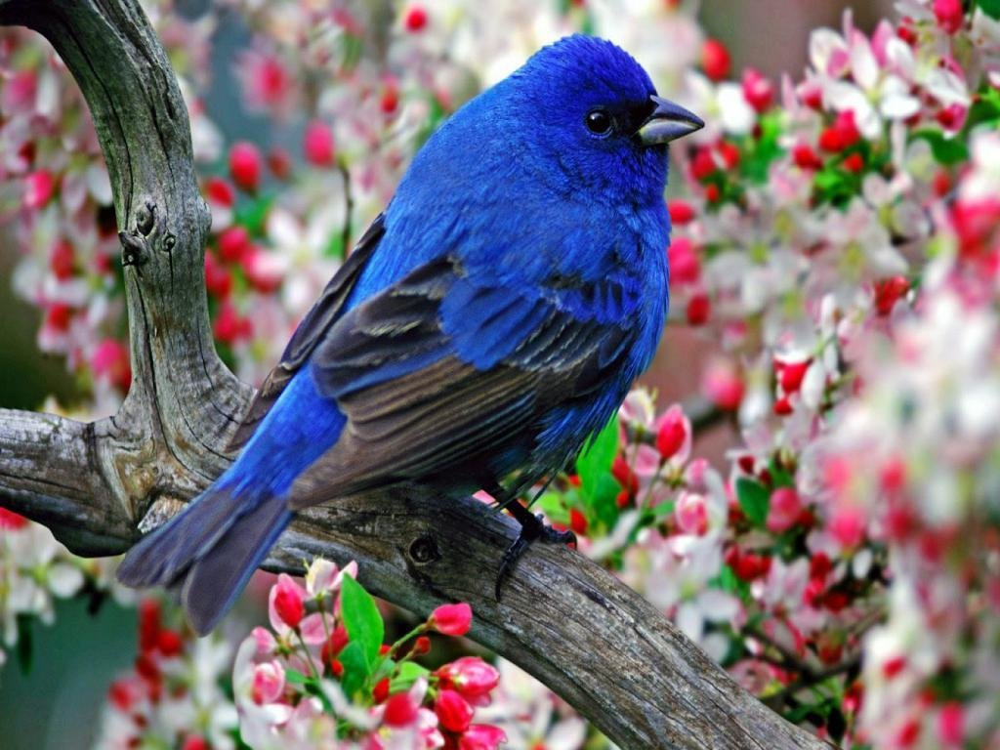

Пейза́ж (фр. Paysage, от pays — страна, местность) — жанр изобразительного искусства (а также отдельные
произведения этого жанра), в котором основным предметом изображения является первозданная либо в той или
иной степени преображённая человеком природа. Современные представления о пейзаже сформировались на
протяжении столетий с развитием художественных приёмов для его изображения. В пейзажном произведении
особое значение придаётся построению перспективы и композиции вида, передаче состояния атмосферы,
воздушной и световой среды, их изменчивости.

Пари́ж (фр. Paris [paˈʁi] Информация о файле слушать) — столица и крупнейший город Франции, а также
административный центр региона Иль-де-Франс. Образует коммуну и департамент, разделённый на 20 округов.
Население: 2,2 млн человек (2016 год), пятый по величине город Евросоюза[2]. В пределах агломерации Большой
Париж проживает 10,6 млн человек (2011 год). Расположен на севере Франции, на равнине Парижского бассейна,
на берегах реки Сены.

Цвето́к (множ. цветки́, лат. flos, -oris, др.-греч. ἄνθος, -ου) — система органов семенного размножения
цветковых (покрытосеменных) растений.

Пти́цы (лат. Aves) — группа теплокровных яйцекладущих позвоночных животных, традиционно рассматриваемая в
ранге отдельного класса[комм. 1]. Хорошо обособлена от остальных групп современных животных. Один из
наиболее характерных признаков — покров из перьев, предохраняющий тело от неблагоприятных изменений
температуры и играющий важную роль при полёте[1]. Способность к полёту — главнейшая особенность птиц
(отсутствие её у некоторых видов — вторичное явление)[2]. Передние конечности приобрели форму крыльев. Птицы
обладают особым строением органов дыхания и пищеварения, что тесно связано с их способностью летать. Ещё
один отличительный признак птиц — наличие клюва[1][2].